2025 ✦ SELECTED PROJECT
天猫招商
DESKTOP EXPERIENCE让入驻价值与品牌空间同屏 ─╯
#01PROJECT
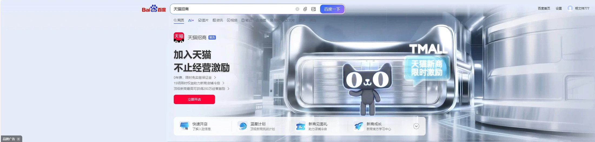
项目背景
招商页面面向潜在入驻商家，需要将平台价值、开店激励与行动入口组织成清晰的沟通。
业务需求
让商家理解入驻价值，找到权益说明与入驻入口，并在电脑和手机上保持阅读连续。
设计问题
店铺空间和品牌角色需要建立吸引力，同时为标题、权益和按钮保留明确的位置。
创意主张
将“在天猫开店”转译为可感知的品牌空间，让视觉与信息共同服务入驻沟通。
设计范围 · 招商视觉、店铺与 IP 探索、多端延展2025 年新商扶持背景 ↗
页面成品 → 入驻沟通 → 空间概念 → 生成与合成 → 动态版本 → 多端应用
SPATIAL CONCEPT以店铺空间表达开店与经营 ─╯
#02PROJECT
天猫轮廓提供品牌识别，店铺的开合为动态提供可延展的状态。
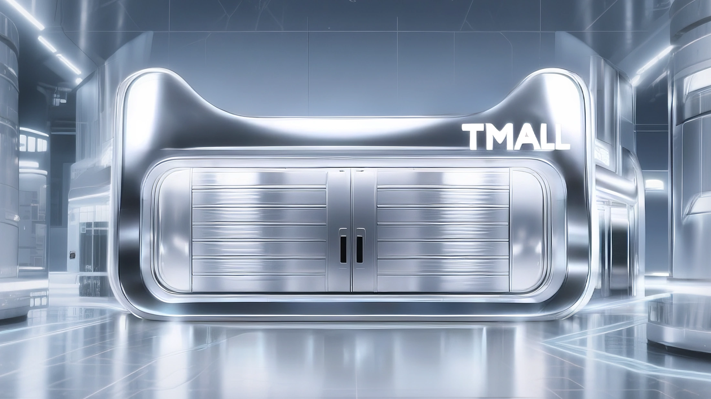
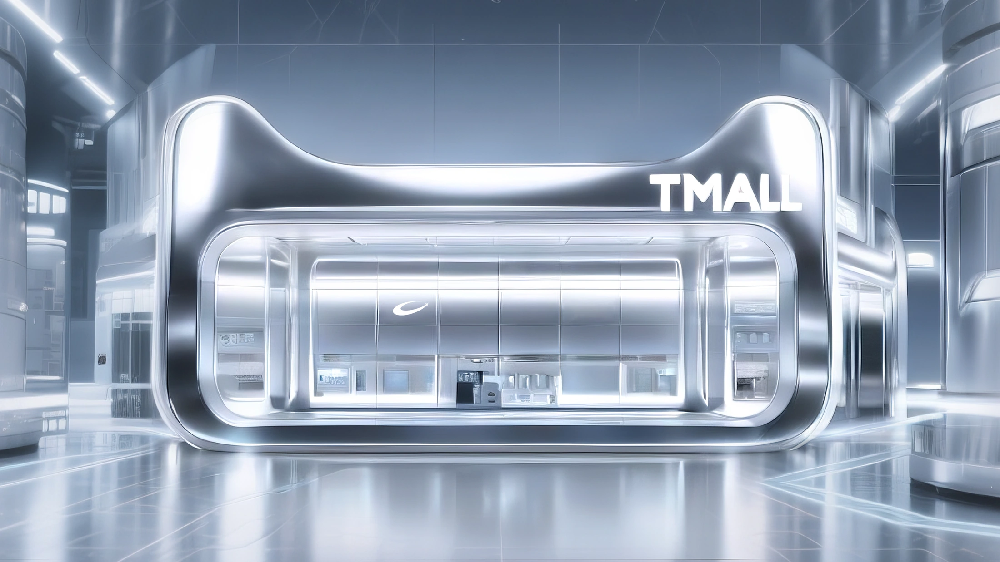
INFORMATION & SPACE先安排信息，再协调空间表现 ─╯
#03PROJECT
安排主标题、视觉主体与行动入口
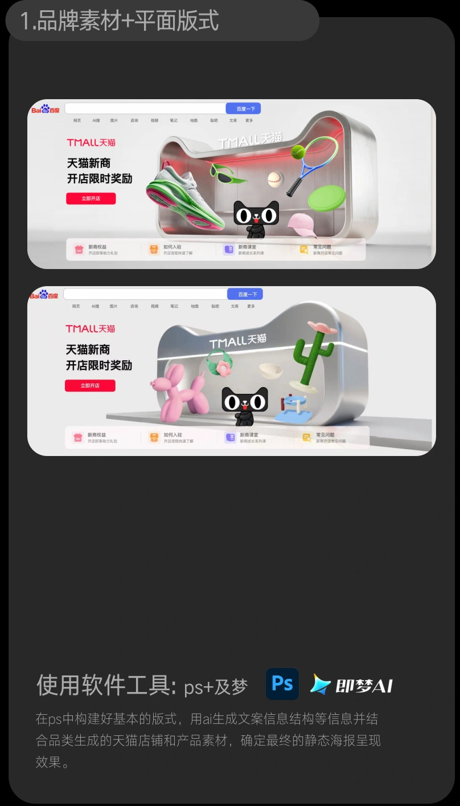
生成店铺与元素，建立空间语言
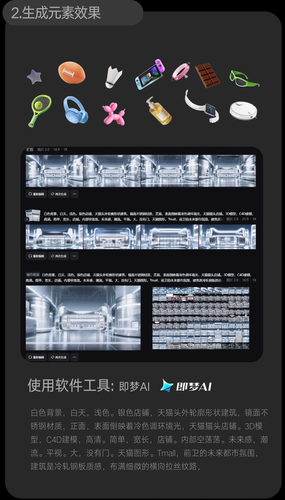
IP & COMPOSITING让角色与动态服务同一页面 ─╯
#04PROJECT
保持品牌角色与店铺的一致性
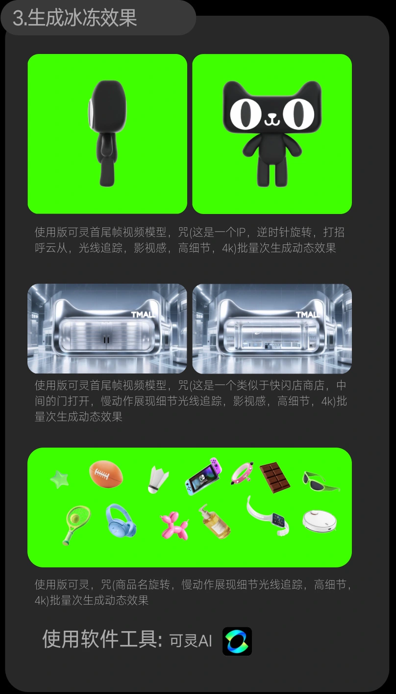
合成角色动作与店铺状态
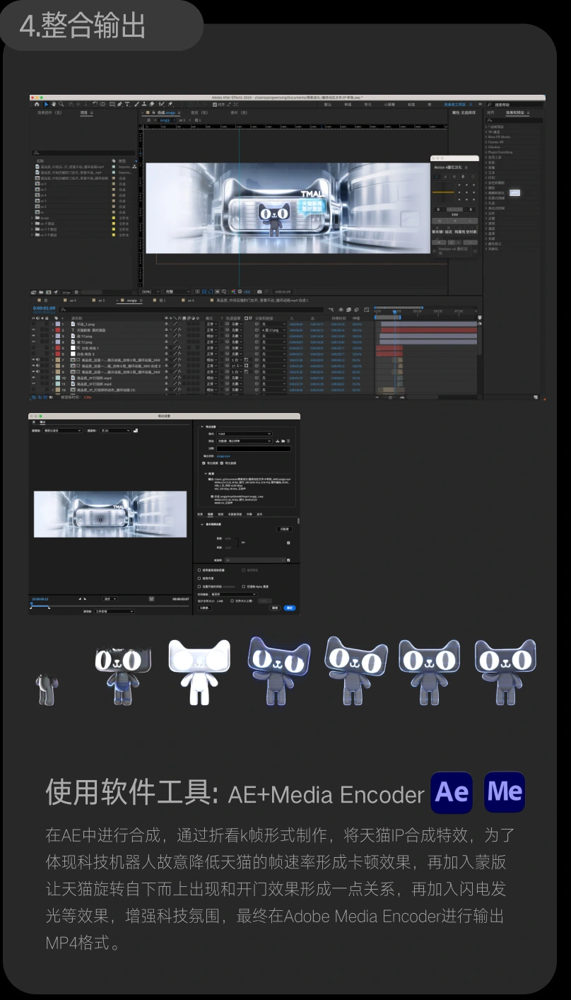
MOTION MATERIALS从独立素材到页面组合 ─╯
#05PROJECT
店铺与 IP 分别测试动作，素材身份与页面成品分开标注。
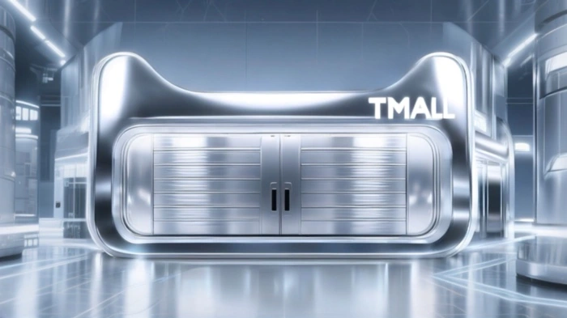
▶ 动效素材 · 5.1s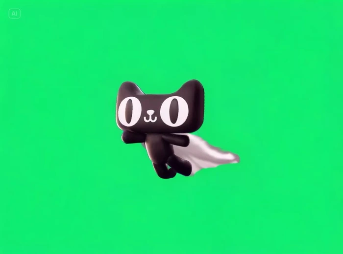
▶ 动效素材 · 5.0sPAGE MOTION动态版本中的信息与主体 ─╯
#06PROJECT
现成页面演示保留原有版式，观察旋转主体与固定信息的关系。
▶ 已导出页面演示 · 5.7s
MULTI DEVICE在不同阅读空间中重排视觉 ─╯
#07PROJECT
横幅、手机端与方案探索并置，呈现主体、文案和信息区域在不同版式中的分配。
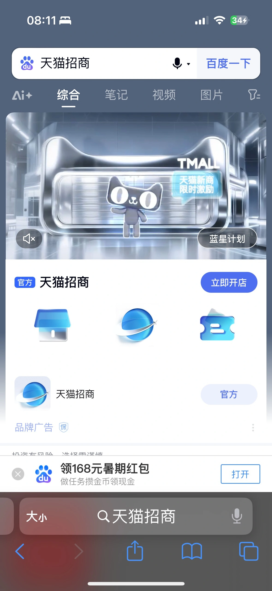
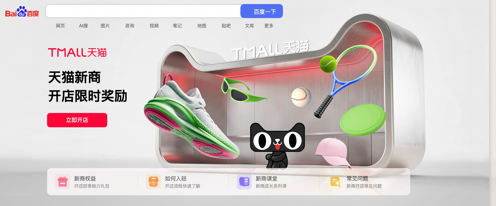
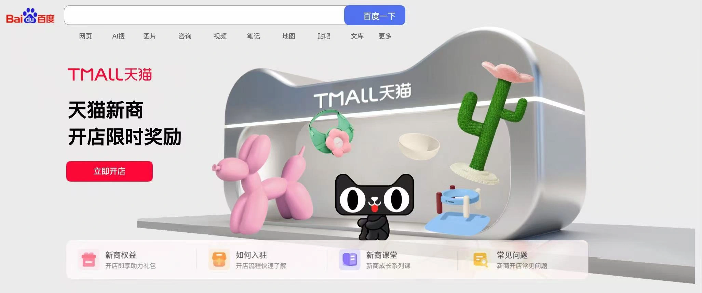
DELIVERY & REVIEW交付与复盘 ─╯
#08PROJECT
交付呈现
电脑端页面、活动横幅、手机端应用，以及店铺与 IP 素材和已导出的页面动态版本。
设计复盘
空间承担品牌识别，信息区承担权益说明；多端延展需要重新分配主体与文案的比例。